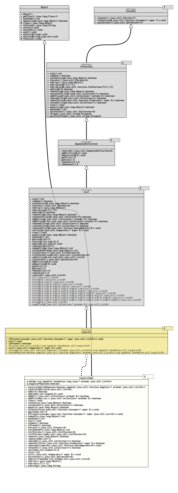

Module org.tquadrat.foundation.util
Class LazyListImpl<E>
java.lang.Object
org.tquadrat.foundation.util.internal.LazyListImpl<E>
- Type Parameters:
E- The type of elements in this list.
- All Implemented Interfaces:
Iterable<E>,Collection<E>,List<E>,SequencedCollection<E>,LazyList<E>
@ClassVersion(sourceVersion="$Id: LazyListImpl.java 1060 2023-09-24 19:21:40Z tquadrat $")
@API(status=INTERNAL,
since="0.0.5")
public final class LazyListImpl<E>
extends Object
implements LazyList<E>
The implementation for
LazyList.- Author:
- Thomas Thrien (thomas.thrien@tquadrat.org)
- Version:
- $Id: LazyListImpl.java 1060 2023-09-24 19:21:40Z tquadrat $
- Since:
- 0.0.5
- UML Diagram
-

UML Diagram for "org.tquadrat.foundation.util.internal.LazyListImpl"
{kind=link}
-
Field Summary
FieldsModifier and TypeFieldDescriptionThe holder for the real list.private final booleanThe flag that indicates whether the provided supplier will put values to the list on initialisation. -
Constructor Summary
ConstructorsConstructorDescriptionLazyListImpl(boolean doPopulate, Supplier<? extends List<E>> supplier) Creates a newLazyListImplinstance.LazyListImpl(List<E> value) Creates a newLazyListImplinstance that is initialised with the given value. -
Method Summary
Modifier and TypeMethodDescriptionfinal voidfinal booleanfinal booleanaddAll(int index, Collection<? extends E> c) final booleanaddAll(Collection<? extends E> c) final voidclear()final booleanfinal booleancontainsAll(Collection<?> c) final booleanfinal voidfinal Eget(int index) final inthashCode()final voidIf thisLazyListinstance has been initialised already, the providedConsumerwill be executed; otherwise nothing happens.final intfinal voidinit()Forces the initialisation of thisLazyListinstance.final booleanisEmpty()final booleanChecks whether thisLazyListinstance has been initialised already.iterator()final intfinal ListIterator<E> final ListIterator<E> listIterator(int index) final Eremove(int index) final booleanfinal booleanremoveAll(Collection<?> c) final booleanfinal voidreplaceAll(UnaryOperator<E> operator) final booleanretainAll(Collection<?> c) final Efinal intsize()final voidsort(Comparator<? super E> c) final Spliterator<E> subList(int fromIndex, int toIndex) final Object[]toArray()final <T> T[]toArray(T[] a) final StringtoString()Methods inherited from class java.lang.Object
clone, finalize, getClass, notify, notifyAll, wait, wait, waitMethods inherited from interface java.util.Collection
parallelStream, stream, toArrayMethods inherited from interface java.util.List
addFirst, addLast, getFirst, getLast, removeFirst, removeLast, reversed
-
Field Details
-
m_Holder
The holder for the real list. -
m_SupplierPopulates
The flag that indicates whether the provided supplier will put values to the list on initialisation.
-
-
Constructor Details
-
LazyListImpl
Creates a newLazyListImplinstance.- Parameters:
doPopulate-trueif the provided supplier will put values to the list on initialisation,falseif it will create an empty list.supplier- The supplier that initialises the internal list for this instance when it is first needed.
-
LazyListImpl
Creates a newLazyListImplinstance that is initialised with the given value.- Parameters:
value- The initialisation value.
-
-
Method Details
-
add
-
add
-
addAll
-
addAll
-
clear
-
contains
-
containsAll
- Specified by:
containsAllin interfaceCollection<E>- Specified by:
containsAllin interfaceList<E>
-
equals
-
forEach
-
get
-
ifPresent
If thisLazyListinstance has been initialised already, the providedConsumerwill be executed; otherwise nothing happens. -
indexOf
-
hashCode
-
init
Forces the initialisation of thisLazyListinstance. -
isEmpty
-
isPresent
Checks whether thisLazyListinstance has been initialised already. -
iterator
-
lastIndexOf
- Specified by:
lastIndexOfin interfaceList<E>
-
listIterator
- Specified by:
listIteratorin interfaceList<E>
-
listIterator
- Specified by:
listIteratorin interfaceList<E>
-
remove
-
remove
-
removeAll
-
removeIf
- Specified by:
removeIfin interfaceCollection<E>
-
replaceAll
- Specified by:
replaceAllin interfaceList<E>
-
retainAll
-
set
-
size
-
sort
-
spliterator
- Specified by:
spliteratorin interfaceCollection<E>- Specified by:
spliteratorin interfaceIterable<E>- Specified by:
spliteratorin interfaceList<E>
-
subList
-
toArray
-
toArray
-
toString
-